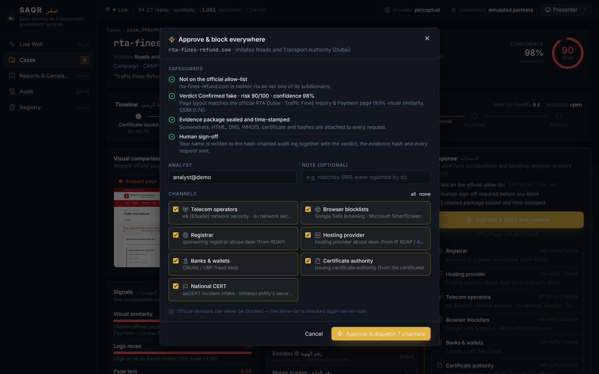

Early warning and one-click takedown for fake government payment pages — caught while they are being set up, blocked everywhere before the first victim pays.
Sense · Assess · Qualify · Respond — the falcon sees the prey long before it strikes.
The problem
Fake fine, fee and refund pages are found after the money is gone
Scammers clone a government payment page, send the link by SMS or WhatsApp, and collect card numbers, CVVs and one-time codes. Today the page is discovered when victims complain — and taking it down means writing to the registrar, the host and the telecom operators one by one.
> 75%
of cyber breaches start with phishing or fraudulent messages
UAE Cyber Security Council
+35%
rise in scam messages in one year
UAE Cyber Security Council
days
a fake stays online while takedowns run one partner at a time
registrar → host → telecoms, sequentially
Name registered
rta-fines-refund.com, any registrar, any TLD
→
Certificate issued
free, automatic, in minutes
→
SMS wave
“claim your AED 320 refund within 24 h”
→
Victims pay
card + CVV + OTP relayed live
→
Complaints
hours to days later — identified here
→
Manual takedown
evidence collected by hand, partners contacted in series
The challenge we answer
Digital Trust & Cyber-Secure Nation · challenge 6
“How might we enable government entities and cybersecurity teams to proactively detect, verify, and respond to websites, messages, domains and digital channels impersonating official government financial services to achieve a 70% reduction in the time to identify fraudulent channels and a 50% reduction in the exposure period of confirmed impersonation attempts, under digital identity, privacy, evidentiary, and legal constraints …”
Detect
continuously identify suspicious domains, sites and messages — before victims report them
Verify
decide automatically whether a channel is authentic, with evidence an analyst can read
Consolidate
threat reports and evidence in one place, with integrity a court can rely on
Respond
coordinate takedown and blocking across organisations and external providers
digital identityprivacyevidentiarylegalUAE National Cybersecurity Strategy 2025-2031
The insight
Scammers publish their own early warning
A convincing fake needs HTTPS — browsers brand plain pages “Not secure”. Every publicly trusted certificate must be written to public Certificate Transparency logs before Chrome and Safari accept it. So the moment a scammer gets a certificate for uae-fines-refund.com, the name is in a public stream anyone can read — usually before the first SMS is sent.
Scammer
registers a look-alike name — any registrar, any TLD
→
Certificate authority
issues a free certificate (Let’s Encrypt, ZeroSSL …)
Forwarded SMS/WhatsApp, bank and telecom reports and threat feeds enter the same queue
2Assess
Opens each candidate in a throw-away browser, desktop and mobile
Visual similarity to a gallery of official pages, emblem reuse, page-text claims, what the form asks for (card, CVV, OTP, Emirates ID)
Fused verdict with a risk score and reasons; parked names are re-checked automatically
3Qualify
Evidence package built automatically: screenshots, DOM, HAR, DNS, RDAP, certificate + log entry, hosting, IOCs
SHA-256 per artefact, Merkle root, trusted timestamp, chain of custody, readable report
Re-verifiable offline by anyone
4Respond
A named analyst approves with one click
Requests fan out at once to registrar, host, telecom operators, browser blocklists, banks, the CA and aeCERT
Allow-list re-checked server-side; every step in a hash-chained audit log; campaigns, not single texts
~150 certificates / s
read straight from the public logs
→
1 in 3,000 names
passes the explainable filter
→
~5 s per candidate
isolated capture + analysis
→
~1 s
evidence hashed, time-stamped, zipped
→
1 click
7 channels, receipts tracked live
Stage 1 · Sense
Millions of names a day → a handful of candidates, each with a reason
Chokepoints the scammer cannot avoid
Certificate logs — read directly with get-sth / get-entries; each leaf parsed for every domain name. ~10,000 names/second per core.
Reactive inputs — citizens forward messages to a number; banks, telecoms and feeds submit links. Names that never hit the logs (free hosting, wildcard certificates) still get the same verification.
Safeguard built in: the allow-list
Official domains, their subdomains and the gov.ae, mil.ae, ac.ae suffixes can never become candidates — checked on the raw name, so a homograph never passes.
The filter explains every point
100 xn--tx-refund-gov-w1k.com → tаx-refund-gov.comCyrillic а
Does it look like the real page — and does it ask for a card?
Official page · rta.ae
93%visual
SSIM 0.74 · emblem 100%
Suspect page · rta-fines-refund.com
90
confirmed fake
confidence 98% · risk /100
Visual layout
0.78
Emblem reuse
1.00
Page text
0.95
Form fields
1.00
Domain name
0.80
asks for card number, CVV, Emirates ID and the SMS one-time code — official portals hand off to a licensed gateway
claims to be RTA, with urgency cues (“within 24 hours”, “will be forfeited”)
certificate issued minutes ago by a free CA
Isolated Chromium capture (desktop + mobile, redirects, TLS, HAR). Encoders share one interface: DINOv3 / DINOv2 when installed, a dependency-free perceptual encoder otherwise. The gym site rta-ae-fitness.com passes the name filter and is cleared here; parked names go to a re-check loop and are caught when activated.
Stage 3 · Qualify
Court-ready evidence, sealed automatically in seconds
What goes in the package
Full-page screenshots (desktop + mobile), rendered DOM, visible text, HAR of the whole visit
DNS records, registration data (RDAP), live TLS certificate, the Certificate Transparency log entry (log + index — anyone can re-fetch it), hosting/ASN and abuse contacts
Indicators shown on the page: IBANs, wallets, phone numbers, e-mails
Verdict and explanations
How integrity is proven
SHA-256 for every artefact → Merkle root → signed manifest
RFC 3161 time-stamp token from a public TSA, or a clearly labelled local Ed25519 signature when offline
Chain-of-custody log, human-readable report, one zip
saqr evidence verify recomputes everything — no trust in SAQR required
report.html as generated for rta-fines-refund.com in the demo
Stage 4 · Respond
One click, every partner at once — with a human in the loop

the approval modal: safeguards shown, analyst named, channels chosen — then Approve & dispatch 7 channels
Channel
What is sent
Effect
Telecom operators via TDRA
URL/domain block, SMS-filter pattern, RPZ record
cuts exposure in seconds
Browser blocklists
Safe Browsing, SmartScreen reports
red warning in every browser
Registrar
suspension notice (RDAP abuse contact, RAA 3.18)
takedown at source
Hosting provider
content takedown (ASN abuse contact)
takedown at source
Banks / CBUAE
IBANs, wallets, numbers from the page
freeze the money trail
Certificate authority
revocation request (BR 4.9.1.1)
padlock removed
aeCERT + imitated entity
incident + IOCs
shared situational awareness
allow-list re-checked server-sidenamed human approvalhash-chained audit logreceipts & acknowledgements per channel
Measured in the demo
From certificate to block in under three minutes — including the human
Certificate logged
06:48:58
Detected
06:49:04
+6 s
Verified · risk 90
06:49:11
+7 s
Evidence sealed
06:49:11
+0 s
Analyst approved
06:51:57
+2 min 46 s
Blocked by telecoms
06:51:58
+1 s
6 s
time to identify, from the public certificate timestamp
challenge target: −70% vs today · assumed baseline 9 h (complaint-driven)
3 min
exposure, from certificate to the first confirmed block
challenge target: −50% vs today · assumed baseline 48 h (takedown-only)
1 click
11 partner requests, acknowledged in parallel; registrar and host takedown continue in the background
simulated partner endpoints in this build
Both metrics are anchored on the Certificate Transparency timestamp — the earliest public trace of the fake — so anyone can recompute them from the log entry stored in the evidence package. Baselines are documented assumptions, to be replaced by the organisers’ historical cases. The gain is structural: today’s delay is waiting — for complaints, then for takedowns — and SAQR removes both waits.
Built for the constraints
Identity, privacy, evidence and law are design inputs, not afterthoughts
Digital identity
No citizen identity is processed — SAQR looks at infrastructure the attacker publishes
Every approval is attributed to a named analyst and written to the audit chain
Production: analysts sign in with UAE PASS
Privacy
No traffic taps, no browsing data, no device access
Reporter numbers are masked and hashed; Emirates ID and phone numbers inside forwarded texts are scrubbed before storage
Personal Data Protection Law (Decree-Law 45/2021) by design
Evidentiary
SHA-256 per artefact, Merkle root, RFC 3161 time-stamp, chain of custody
Aligned with the Electronic Transactions and Trust Services law (Decree-Law 46/2021)
Legal
Human sign-off before any block; allow-list enforced in the dispatcher, not the UI
Notices cite ICANN RAA 3.18, CA/B Forum BR 4.9.1.1 and the Cybercrimes law (Decree-Law 34/2021)
Registrar/host takedown and network blocking run in parallel, each on its own legal basis
The same model as the Kazakhstan National Bank’s Antifraud Center — banks, prosecutors, police and mobile operators acting on one shared case in real time — applied to fake websites and messages instead of fraudulent transfers.
What we built
A working node, not a mock-up
6,000
lines of Python: sensing, verification, evidence, response, API
6,000
lines of TypeScript: the analyst dashboard
91
automated tests, incl. real log entries and the full dispatch flow
36
API routes + live WebSocket events
34 / 44
protected entities / official domains in the registry
7
partner connectors with realistic payloads
Python · FastAPI · Playwright/Chromium · React/Vite/Tailwind · SQLite · Docker. Runs fully offline for demos (saqr demo) or on the real global certificate feed (saqr demo --live).
Live Wall: certificate ticker, detections moving through the stages, funnel and target gauges
Honest scope · next steps
What the MVP does not do yet — and the 90-day path
Not covered by the certificate filter
Names without a recognisable word (xk7q2.shop), wildcard certificates, free-hosting subdomains, hacked legitimate sites → found reactively through reports and feeds, then the same verification and block
Partner connectors are simulated: realistic payloads and acknowledgements, no live SMTP/API credentials
The demo runs the dependency-free perceptual encoder; DINOv3 plugs into the same interface
Baselines for the 70% / 50% comparison are assumptions until historical case data replaces them
No authentication in the MVP — sits behind the entity’s SSO in deployment
Roadmap
Partners: TDRA block list and SMS filtering with e& and du, UAE Banks Federation fraud desk, aeCERT, CA abuse APIs — the Antifraud-Center model: everyone acts on the same case at once
Model: DINOv3 fine-tuned on historical impersonation cases; learned fusion replacing the hand-set weights
Trust: UAE PASS sign-in for analysts, national time-stamping authority, STIX/TAXII sharing
Citizens: a short reporting number and WhatsApp bot; feedback to the reporter when the page is blocked
Scale: all CT logs, registrar zone feeds, paid-search and social-ad monitoring
Operate
one national node (Cyber Security Council / TDRA); each entity’s SOC sees its own cases and gallery
Measure
time-to-identify and exposure per case, anchored on public log timestamps — the challenge KPIs, continuously
Extend
same pipeline for fake apps, ads and social accounts: new sensors, same verification and response
Live demo
Catch them while they set up. Block them everywhere with one click.
1Watch the feed
a certificate for rta-fines-refund.com appears in the live ticker and lights up
2Seconds later
verified as a clone collecting card, CVV and OTP; evidence sealed; the SMS lure arrives and joins the campaign
3One click
seven channels dispatched, telecom block acknowledged, exposure measured — a gym site with the same word is cleared, a parked domain is caught when it goes live